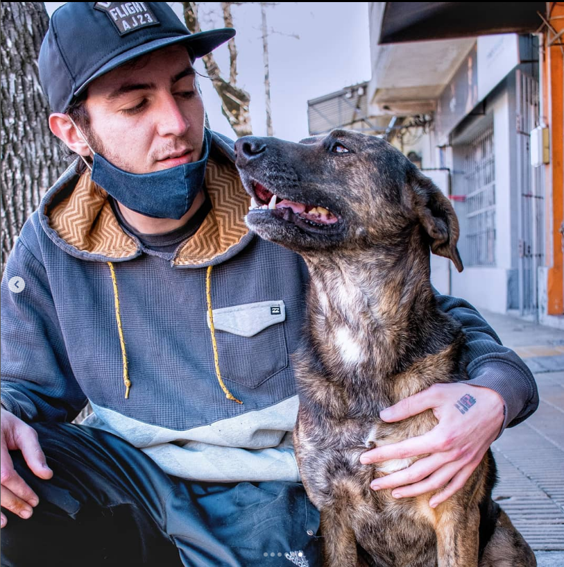

C.V. MATHIAS CURBELO
DATOS PERSONALES
- Nombre Completo: Mathias Curbelo
- Fecha de Nacimiento: 02 de Julio de 1994
- Lugar de nacimiento: Montevideo, UY.
FORMACIÓN ACADÉMICA
- 2021 - 2023
- Programación Autodidacta
- 2014 - 2017
- Reparación PC y Redes
EXPERIENCIA LABORAL
- 2016 - 2023
- Operador Cybercafé / Centro Impresiones
- Centro de impresiones, reparación de pc, atención al público.
- 2013 - 2016
- Librería Bookshop S.A.
- Trabajo de depósito, logística y gestión.
- 2012 - 2013
- OSE, Mantenimiento.
- Mantenimiento de obras sanitarias del estado,